| Sprites and bitmaps |
Every picture of the things that move, from the rocket's parts at rocket_bars_graphic to the last at ringed_planet_graphic, then the small ones kept elsewhere, the special beam's frames and the panel's bitmaps. Almost all are in one form: a byte of width in bytes, a byte of height in lines, then the lines, the bottom line first, with no mask -- everything is drawn upwards from its bottom line. The add-ons have a byte before them, the height the ship's picture must have to show them, and a mask after (or $FF for none); the jets and the beam's frames are height first, with no width byte, their drawers entered at a fixed width.
Each is drawn here by the routine that draws it in the game, run in SkoolKit's simulator on a game started and run to its menu: an object's picture by the compositor -- clear_sprite_pair, the end of prepare_draw (the header, the clip and the row routine) and draw_object_images, which jumps into draw_sprite_pair -- byte-aligned on a cleared screen; the ship's parts by the direct drawer draw_direct_pair; the beam by its own code. White is a pixel set; no sprite has colours of its own (colour_sprite paints the cells an object covers). The table says what uses each: the graphic number and frame from object_graphic_lists, an add-on, a rocket part or a ground kind.
The sprites -- The small pictures kept elsewhere -- The special beam -- The panel's bitmaps -- The font
| Picture | Graphic | What it shows | Size and form | Drawn here by | Used as |
|---|---|---|---|---|---|
| rocket_bars_graphic $731F | Rocket part: a barred band | 24 by 8 | the compositor (draw_sprite_pair) | rocket part 0 (type $1E frame 0) | |
| rocket_checks_graphic $7339 | Rocket part: a chequered band | 24 by 8 | the compositor (draw_sprite_pair) | rocket part 1 (type $1E frame 1) | |
| rocket_crate_graphic $7353 | Rocket part: a lettered crate | 24 by 17 | the compositor (draw_sprite_pair) | rocket part 2 (type $1E frame 2) | |
| rocket_crate_b_graphic $7388 | Rocket part: a second lettered crate | 24 by 16 | the compositor (draw_sprite_pair) | rocket part 3 (type $1E frame 3) | |
| rocket_fin_graphic $73BA | Rocket part: a fin | 16 by 16 | the compositor (draw_sprite_pair) | rocket part 4 (type $1E frame 4) | |
| rocket_fin_b_graphic $73DC | Rocket part: the other fin | 16 by 16 | the compositor (draw_sprite_pair) | rocket part 5 (type $1E frame 5) | |
| rocket_nose_graphic $73FE | Rocket part: a pointed badge | 24 by 18 | the compositor (draw_sprite_pair) | rocket part 7 (type $1E frame 7) | |
| addon_slab $7436 its picture addon_slab_picture | Add-on 10: a large slab (its size) | 40 by 35 | the direct drawer (draw_direct_pair), as draw_carried_piece draws the carried load | add-on 10; lying on the planet as type $0C frame 9 | |
| addon_spire $74E7 its picture addon_spire_picture | Add-on 11: a tall spire (its size) | 24 by 47 | the direct drawer (draw_direct_pair), as draw_carried_piece draws the carried load | add-on 11; lying on the planet as type $0C frame 10 | |
| addon_bar_graphic $7577 its mask, drawn here from its bytes: | Add-on 8: a small bar | 16 by 4, masked; needs height 0 | the compositor (draw_sprite_pair) | add-on 8; lying on the planet as type $0C frame 7 | |
| addon_mound_graphic $758A its mask, drawn here from its bytes: | Add-on 6: a small mound | 24 by 6, masked; needs height 16 | the compositor (draw_sprite_pair) | add-on 6; lying on the planet as type $0C frame 5 | |
| addon_figure_graphic $75B1 its mask, drawn here from its bytes: | Add-on 9: a small figure | 16 by 15, masked; needs height 0 | the compositor (draw_sprite_pair) | add-on 9; lying on the planet as type $0C frame 8 | |
| addon_post_graphic $75D8 its mask, drawn here from its bytes: | Add-on 7: a small post | 16 by 5, masked; needs height 17 | the compositor (draw_sprite_pair) | add-on 7; lying on the planet as type $0C frame 6 | |
| addon_block_graphic $75EF its mask, drawn here from its bytes: | Add-on 4: a small block | 16 by 14, masked; needs height 16 | the compositor (draw_sprite_pair) | add-on 4; lying on the planet as type $0C frame 3 | |
| addon_arches_graphic $762A its mask, drawn here from its bytes: | Add-on 5: two arches | 32 by 11, masked; needs height 21 | the compositor (draw_sprite_pair) | add-on 5; lying on the planet as type $0C frame 4 | |
| addon_hook_graphic $7685 | Add-on 1: a hook | 16 by 23, no mask; needs height 35 | the compositor (draw_sprite_pair) | add-on 1; lying on the planet as type $0C frame 0 | |
| addon_hook_b_graphic $76B7 | Add-on 2: a hook, mirrored | 16 by 23, no mask; needs height 35 | the compositor (draw_sprite_pair) | add-on 2; lying on the planet as type $0C frame 1 | |
| rocket_tank_graphic $76E9 its mask, drawn here from its bytes: | Add-on 3 and rocket part 6: the ore tank | 24 by 18, masked; needs height 40 | the compositor (draw_sprite_pair) | add-on 3; lying on the planet as type $0C frame 2; rocket part 6 (type $1E frame 6) | |
| ore_rows_graphic $7721 | The ore in the tank | 16 by 18, rows only | drawn here from its bytes: the game only copies it into the ship's picture (load_ore) | the ore in the tank (part 6) | |
| rocket_tank_full_graphic $7745 | Rocket part: the ore tank, full | 24 by 18 | the compositor (draw_sprite_pair) | rocket the ore tank, full (type $1E frame 8) | |
| fuel_flask_graphic $777D | A flask | 24 by 35 | the compositor (draw_sprite_pair) | ground kind 0 | |
| pedestal_graphic $77E8 | A pedestal | 32 by 23 | the compositor (draw_sprite_pair) | ground kind 1 | |
| puff_graphic $7846 | The side jet, 16 pixels wide | 16 by 16, height first | the direct drawer (draw_direct_pair), as side_jet and lift_jet draw the jets | graphic $0E | |
| puff_b_graphic $7867 | The side jet, 16 pixels wide, second frame | 16 by 15, height first | the direct drawer (draw_direct_pair), as side_jet and lift_jet draw the jets | graphic $0F | |
| puff_c_graphic $7886 | The side jet, 16 pixels wide, third frame | 16 by 14, height first | the direct drawer (draw_direct_pair), as side_jet and lift_jet draw the jets | graphic $10 | |
| puff_wide_graphic $78A3 | The lift jet while thrusting, 32 pixels wide | 32 by 16, height first | the direct drawer (draw_direct_pair), as side_jet and lift_jet draw the jets | graphic $11 | |
| puff_wide_b_graphic $78E4 | The lift jet, 32 pixels wide | 32 by 8, height first | the direct drawer (draw_direct_pair), as side_jet and lift_jet draw the jets | graphic $12 | |
| spiky_mound_graphic $7905 | A spiky mound | 40 by 13 | the compositor (draw_sprite_pair) | ground kind 3 | |
| cloud_small_graphic $7948 | The small cloud | 32 by 12 | the compositor (draw_sprite_pair) | type $13 frame 0 | |
| cloud_big_graphic $797A | The big cloud | 40 by 24 | the compositor (draw_sprite_pair) | type $13 frame 1 | |
| rotor_graphic $79F4 | A rotor craft | 24 by 17 | the compositor (draw_sprite_pair) | type $14 frame 0 | |
| rotor_b_graphic $7A29 | A rotor craft, second frame | 24 by 17 | the compositor (draw_sprite_pair) | type $14 frame 1; type $14 frame 3 | |
| rotor_c_graphic $7A5E | A rotor craft, third frame | 24 by 17 | the compositor (draw_sprite_pair) | type $14 frame 2 | |
| burst_small_graphic $7A93 | A small burst | 16 by 14 | the compositor (draw_sprite_pair) | type $15 frame 0 | |
| burst_small_b_graphic $7AB1 | A small burst, second frame | 16 by 14 | the compositor (draw_sprite_pair) | type $15 frame 1 | |
| burst_big_graphic $7ACF | A big burst | 24 by 21 | the compositor (draw_sprite_pair) | type $15 frame 2; type $15 frame 4 | |
| burst_big_b_graphic $7B10 | A big burst, second frame | 24 by 21 | the compositor (draw_sprite_pair) | type $15 frame 3; type $15 frame 5 | |
| dome_graphic $7B51 | A dome | 24 by 25 | the compositor (draw_sprite_pair) | type $1A frame 0 | |
| dome_b_graphic $7B9E | A dome, second frame | 24 by 25 | the compositor (draw_sprite_pair) | type $1A frame 1 | |
| dome_c_graphic $7BEB | A dome, third frame | 24 by 25 | the compositor (draw_sprite_pair) | type $1A frame 2 | |
| bullet_graphic $7C38 | A bullet | 16 by 16 | the compositor (draw_sprite_pair) | type $1C frame 0 | |
| bullet_b_graphic $7C5A | A bullet, second frame | 16 by 16 | the compositor (draw_sprite_pair) | type $1C frame 1 | |
| bullet_c_graphic $7C7C | A bullet, third frame | 16 by 16 | the compositor (draw_sprite_pair) | type $1C frame 2 | |
| pellet_graphic $7C9E | A pellet | 8 by 8 | the compositor (draw_sprite_pair) | type $1C frame 4 | |
| refuel_pick_up_graphic $7CA8 | The refuel pick-up | 8 by 8 | the compositor (draw_sprite_pair) | type $1C frame 3 | |
| fuel_thief_graphic $7CB2 | The fuel thief | 8 by 7 | the compositor (draw_sprite_pair) | type $1C frame 6 | |
| pellet_b_graphic $7CBB | A tiny pellet | 8 by 3 | the compositor (draw_sprite_pair) | type $1C frame 5; type $1C frame 7 | |
| rock_graphic $7CC0 | A tumbling rock | 16 by 16 | the compositor (draw_sprite_pair) | type $1D frame 0 | |
| rock_b_graphic $7CE2 | A tumbling rock, frame 1 | 16 by 16 | the compositor (draw_sprite_pair) | type $1D frame 1 | |
| rock_c_graphic $7D04 | A tumbling rock, frame 2 | 16 by 16 | the compositor (draw_sprite_pair) | type $1D frame 2 | |
| rock_d_graphic $7D26 | A tumbling rock, frame 3 | 16 by 16 | the compositor (draw_sprite_pair) | type $1D frame 3 | |
| rock_e_graphic $7D48 | A tumbling rock, frame 4 | 16 by 16 | the compositor (draw_sprite_pair) | type $1D frame 4 | |
| rock_f_graphic $7D6A | A tumbling rock, frame 5 | 16 by 16 | the compositor (draw_sprite_pair) | type $1D frame 5 | |
| comet_graphic $7D8C | A comet | 24 by 22 | the compositor (draw_sprite_pair) | type $1D frame 6 | |
| comet_b_graphic $7DD0 | A comet, second frame | 24 by 23 | the compositor (draw_sprite_pair) | type $1D frame 7 | |
 | debris_graphic $7E17 | A heap of debris | 24 by 27 | the compositor (draw_sprite_pair) | ground kind 9 |
| small_craft_graphic $7E6A | A small craft | 24 by 13 | the compositor (draw_sprite_pair) | ground kind 7 | |
| tough_attacker_graphic $7E93 | The tough attacker | 40 by 12 | the compositor (draw_sprite_pair) | type $19 frame 0 | |
| tough_attacker_b_graphic $7ED1 | The tough attacker, second frame | 40 by 12 | the compositor (draw_sprite_pair) | type $19 frame 1 | |
| eye_pod_graphic $7F0F | An eye pod | 16 by 14 | the compositor (draw_sprite_pair) | type $17 frame 0 | |
| eye_pod_b_graphic $7F2D | An eye pod, second frame | 16 by 13 | the compositor (draw_sprite_pair) | type $17 frame 1 | |
| saucer_graphic $7F49 | A saucer | 24 by 10 | the compositor (draw_sprite_pair) | type $16 frame 0 | |
| saucer_b_graphic $7F69 | A saucer, frame 1 | 24 by 10 | the compositor (draw_sprite_pair) | type $16 frame 1 | |
| saucer_c_graphic $7F89 | A saucer, frame 2 | 24 by 10 | the compositor (draw_sprite_pair) | type $16 frame 2 | |
| saucer_d_graphic $7FA9 | A saucer, frame 3 | 24 by 10 | the compositor (draw_sprite_pair) | type $16 frame 3 | |
| pillar_graphic $7FC9 | A pillar | 16 by 18 | the compositor (draw_sprite_pair) | type $18 frame 0 | |
| pillar_b_graphic $7FEF | An arch | 16 by 18 | the compositor (draw_sprite_pair) | type $18 frame 2 | |
| pillar_c_graphic $8015 | A pillar, second frame | 16 by 18 | the compositor (draw_sprite_pair) | type $18 frame 1; type $18 frame 3 | |
 | debris_b_graphic $8073 | More debris | 24 by 27 | the compositor (draw_sprite_pair) | ground kind 8 |
| debris_c_graphic $80C6 | More debris | 24 by 22 | the compositor (draw_sprite_pair) | ground kind 10 | |
| small_craft_b_graphic $810A | A small craft | 24 by 13 | the compositor (draw_sprite_pair) | ground kind 6 | |
| cloud_craft_graphic $8133 | A craft in a cloud | 40 by 20 | the compositor (draw_sprite_pair) | ground kind 2 | |
| dome_robot_graphic $8199 | A domed robot | 16 by 15 | the compositor (draw_sprite_pair) | ground kind 5; ground kind 12; type $1B frame 2 (ground kinds 5, 12) | |
| dome_robot_b_graphic $81B9 | A domed robot, second frame | 16 by 15 | the compositor (draw_sprite_pair) | type $1B frame 3 (ground kinds 5, 12) | |
| lamp_graphic $81D9 | A lamp | 16 by 16 | the compositor (draw_sprite_pair) | ground kind 4; type $1B frame 0 (ground kinds 4, 16) | |
| lamp_b_graphic $81FB | A lamp, second frame | 16 by 16 | the compositor (draw_sprite_pair) | type $1B frame 1 (ground kinds 4, 16) | |
| fuel_station_graphic $821D | A fuel station | 24 by 24 | the compositor (draw_sprite_pair) | ground kind 14; type $1B frame 4 (ground kind 14) | |
| fuel_station_b_graphic $8267 | A fuel station, second frame | 24 by 24 | the compositor (draw_sprite_pair) | type $1B frame 5 (ground kind 14) | |
| pylon_craft_graphic $82B1 | A craft hanging from a pylon | 40 by 16 | the compositor (draw_sprite_pair) | ground kind 13; ground kind 15 | |
| ringed_planet_graphic $8303 | A ringed planet | 24 by 22 | the compositor (draw_sprite_pair) | ground kind 11 |
The missile's two facings, the trail's six bends, the stars, the shield ring and the attackers' dash, each beside the code that uses it. The trail is drawn by the direct drawer like the ship, everything else here by the compositor. The ship icon under each score is frame 8 of type $1C, the extra life, and the panel draws the same bytes with draw_bitmap.
| Picture | Graphic | What it shows | Size and form | Drawn here by | Used as |
|---|---|---|---|---|---|
| dash_graphic $89CF | The attackers' shot: a dash | 8 by 1 | the compositor (draw_sprite_pair) | type $1C frame 10 | |
| shield_ring $98D8 | The ring, the shield pick-up | 16 by 16 | the compositor (draw_sprite_pair) | type $1C frame 9 | |
| missile_frame_a $B93A | The missile, first frame | 8 by 3 | the compositor (draw_sprite_pair) | graphic $00 frame 0 | |
| missile_frame_b $B93F | The missile, second frame | 8 by 3 | the compositor (draw_sprite_pair) | graphic $00 frame 1 | |
| star_images $C190 | The star images | 8 by 1 | the compositor (draw_sprite_pair) | graphic $07 | |
| $C193, in star_images $C193 | The star images | 8 by 1 | the compositor (draw_sprite_pair) | graphic $08 | |
| $C196, in star_images $C196 | The star images | 8 by 2 | the compositor (draw_sprite_pair) | graphic $09 | |
| $C19A, in star_images $C19A | The star images | 8 by 2 | the compositor (draw_sprite_pair) | graphic $0A | |
| $C19E, in star_images $C19E | The star images | 8 by 3 | the compositor (draw_sprite_pair) | graphic $0B | |
| trail_images $C7C8 | The trail's six images | 8 by 8 | the direct drawer (draw_direct_pair), as draw_trail draws the trail | graphic $01 | |
| $C7D2, in trail_images $C7D2 | The trail's six images | 8 by 8 | the direct drawer (draw_direct_pair), as draw_trail draws the trail | graphic $02 | |
| $C7DC, in trail_images $C7DC | The trail's six images | 8 by 7 | the direct drawer (draw_direct_pair), as draw_trail draws the trail | graphic $03 | |
| $C7E5, in trail_images $C7E5 | The trail's six images | 8 by 6 | the direct drawer (draw_direct_pair), as draw_trail draws the trail | graphic $04 | |
| $C7ED, in trail_images $C7ED | The trail's six images | 8 by 5 | the direct drawer (draw_direct_pair), as draw_trail draws the trail | graphic $05 | |
| $C7F4, in trail_images $C7F4 | The trail's six images | 8 by 4 | the direct drawer (draw_direct_pair), as draw_trail draws the trail | graphic $06 | |
| score_bitmap $C927 | The bitmap under the scores | 32 by 9 | the compositor (draw_sprite_pair) | type $1C frame 8 |
Four frames, the cycle beam_frames walks running 0, 1, 2, 3, 2, 1: each a height and a 16-pixel pattern a line. new_beam_frame expands this pass's frame into an 8-byte-wide pattern in sprite_buffer_two (expand_beam_frame), and draw_beam ORs as many cells of it as the beam is long onto the screen, as it does a laser's. Drawn here that way at the beam's full length, 8 cells, from the first shot record.
| Picture | Graphic | What it shows | Size and form | Drawn here by | Used as |
|---|---|---|---|---|---|
| ring_graphic $803B | The special beam, frame 0 | 16 by 5, height first | the special beam's expander and draw_beam (new_beam_frame, draw_beam) | step 0 of the special beam's cycle | |
| ring_b_graphic $8046 | The special beam, frame 1 | 16 by 6, height first | the special beam's expander and draw_beam (new_beam_frame, draw_beam) | step 1 of the special beam's cycle; step 5 of the special beam's cycle | |
| ring_c_graphic $8053 | The special beam, frame 2 | 16 by 7, height first | the special beam's expander and draw_beam (new_beam_frame, draw_beam) | step 2 of the special beam's cycle; step 4 of the special beam's cycle | |
| ring_d_graphic $8062 | The special beam, frame 3 | 16 by 8, height first | the special beam's expander and draw_beam (new_beam_frame, draw_beam) | step 3 of the special beam's cycle |
Byte-aligned bitmaps in the same form, drawn over whatever is there by draw_bitmap, never erased: the frame round the play area (and the menu's, which uses the same corners and ornaments), the fuel gauge and the menu's pointers. Each is drawn here by draw_bitmap; the corners and the copyright glyphs follow one another, so each list is drawn as the game walks it. The ship icon under each score is above. See the panel and the menu for them in place.
| Picture | Bitmap | Size | What it is |
|---|---|---|---|
| edge_ornament | 8 by 6 | the frame's ornament on the top and bottom edges (draw_frame) | |
| side_ornament | 8 by 6 | the frame's ornament on the sides (draw_frame) | |
| corner_bitmaps | 8 by 7, 8 by 7, 8 by 7, 8 by 7 | the frame's corners, the four one after another (draw_frame, for the panel's frame and the menu's) | |
| fuel_label | 16 by 32 | the gauge's label, beside it (draw_panel) | |
| gauge_bottom_cap | 16 by 4 | the gauge's cap at the top of the tube, line $43 (draw_fuel_gauge) | |
| gauge_top_cap | 16 by 4 | the gauge's cap at its foot, line $BF (draw_fuel_gauge) | |
| pointer_p1_graphic | 24 by 21 | player 1's pointer on the menu (move_method_arrow) | |
| pointer_p2_graphic | 24 by 21 | player 2's pointer on the menu (move_method_arrow) | |
| copyright_glyphs | 24 by 8, 16 by 6 | the copyright line's glyphs, two one after the other (menu) |